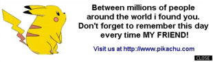

Email Virus
This virus is spread via email, this will hide an email when recipient opens the mail. They generally target a specific type of email system (Microsoft's Outlook is the most commonly used), harvest email addresses from various sources, and may append copies of themselves to all email sent, or may generate email messages containing copies of themselves as attachments. Email-Worm like Win32.Pikachu or Pikachu.